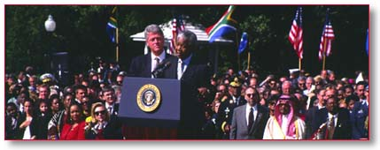

|
After first brokering Dayton Peace
Accords ending four years of bloodshed in Bosnia, now
helping to provide secure environment so that
elections and economic reconstruction can
proceed. |
|
|
Championed peace efforts in the
Middle East, negotiating Israel-Jordan peace treaty
and helping Israelis and Palestinians fulfill their
historic peace agreement. |
|
|
Authored and organized strong
counter-terrorism initiatives at the Summit of the
Peacemakers in Egypt in March 1996 and at the G-7
Economic Summit in Lyons in June 1996. |
|
|
Restored democracy to Haiti,
stopping the flow of refugees to the United States,
accomplishing the first transfer of power from one
democratically elected president to another in
Haitian history. |
|
|
As the first American President to
visit Northern Ireland, made a consistent commitment
to establish lasting peace there. |
|
|
Russian missiles are no longer
pointed at America’s children. |
|
|
Poised to reduce nuclear stockpiles
by another 25% by successfully securing bipartisan
Senate ratification of the Start II Treaty with
Russia. |
|
|
Imposed the toughest sanctions ever
on Castro’s Cuba following the brutal shoot-down of
U.S. nationals over international waters. |
|
|
Shaped new American military for
post-Cold War challenges to peace, ensuring America
remains the best-equipped, best-trained and
best-prepared fighting force in the world. |
|
|
Intensified the fight against
terrorism and organized crime at home and abroad by
pressing for new anti-terrorism legislation providing
law enforcement officials tough, updated tools to
stop terrorists before they strike and to insure
strong penalties for the convicted. |
|